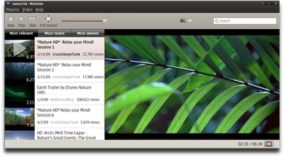

Minitube
Dieser Artikel wurde für die folgenden Ubuntu-Versionen getestet:
Ubuntu 16.04 Xenial Xerus
Ubuntu 14.04 Trusty Tahr
Zum Verständnis dieses Artikels sind folgende Seiten hilfreich:
Adobe Flash erzeugt unter Linux aufgrund der fehlenden Unterstützung durch die Grafikhardware bzw. -karte eine hohe Prozessorlast. Dies äußert sich in einer ruckelnden Video-Wiedergabe, insbesondere bei älteren PCs, aber auch bei leistungsschwachen Netbooks. Für eines der bekanntesten Videoportale, YouTube  , gibt es jedoch Abhilfe.
, gibt es jedoch Abhilfe.
Mit dem nativen Player Minitube  kann man Videos auch ohne Browser und Flash-Plugin ansehen. Das Ziel des Programms ist es aber nicht, die Weboberfläche von YouTube zu klonen, sondern eine neue, TV-ähnliche Bedienung: der Benutzer gibt ein Suchwort ein, und Minitube erzeugt eine endlose Abspielliste (Playlist).
kann man Videos auch ohne Browser und Flash-Plugin ansehen. Das Ziel des Programms ist es aber nicht, die Weboberfläche von YouTube zu klonen, sondern eine neue, TV-ähnliche Bedienung: der Benutzer gibt ein Suchwort ein, und Minitube erzeugt eine endlose Abspielliste (Playlist).
Bis einschließlich Version 2.1 war auch ein Download-Manager integriert, der das direkte Herunterladen der Videos von YouTube ermöglichte. In neueren Programmversionen wurde diese Funktion aus rechtlichen Gründen entfernt.
Funktionen: 
Wiedergabe von HD-Videos
Vor-/Zurückspulen
Suchen von Kanälen und Videos
Speichern von Suchverläufen
Videos im Vollbildmodus betrachten
Lautstärke der Videos regeln
Videos sortieren nach: Beliebtheit, Datum und Meistgesehen
Suchvorschläge in Suchfunktion
Videos teilen
Auflösung von Videos ändern
Installation¶
Hinweis:
Die in den offiziellen Paketquellen enthaltene Version funktioniert aufgrund einer API-Änderung bei YouTube bis einschließlich Ubuntu 15.04 nicht mehr. Abhilfe schafft die Installation über ein Fremdpaket.
Minitube ist in den offiziellen Paketquellen enthalten. Folgendes Paket wird benötigt [1]:
minitube (universe)
 mit apturl
mit apturl
Paketliste zum Kopieren:
sudo apt-get install minitube
sudo aptitude install minitube
Fremdpaket¶
Der Programmautor Flavio Tordini bietet über die Projektseite ein aktuelles Fremdpaket an, das nach dem Herunterladen  noch manuell installiert werden muss [2].
noch manuell installiert werden muss [2].
Hinweis!
Fremdpakete können das System gefährden.
Verwendung¶
Die Bedienung von Minitube ist recht einfach. Nach dem Start des Programms wird im Suchfenster ein Stichwort eingegeben. Auf der linken Seite des Programmfensters erhält man dann eine Abspielliste mit allen gefundenen Videos, die automatisch nacheinander abgespielt werden. Diese können dann nochmal nach "die bedeutsamsten", "die neusten" und "Meist gesehen" oder von Hand neu sortiert werden. In der rechten Fensterhälfte wird das Video wiedergegeben.
Zum Vollbildmodus gelangt man entweder per Symbol in der Werkzeugleiste oder per Doppelklick ins Video. Möchte man ein Video in HD anschauen, so klickt man im Fenster rechts unten auf das kleine "HD-Symbol". Die Videos können auch im Kompaktmodus wiedergegeben werden. Mit den Steuerungselementen kann das Video gestoppt, pausiert und auch wieder fortgesetzt werden.
Problembehebung¶
Youtube API-Key¶
Ältere Versionen von Minitube benötigen einen Youtube API-Key von Google, damit das Programm Videos anzeigen kann. Wie man an einen API-Key kommt und diesen installiert, ist der Anleitung Why is Minitube not working anymore? zu entnehmen. Alternativ kann man ein Fremdpaket installieren, dass von diesem Problem nicht betroffen ist.
Videos werden nicht abgespielt¶
Falls die Videos in Minitube nicht abgespielt werden, kann der folgende Workaround versucht werden:
Deinstallieren des GStreamer-Backends:
sudo apt-get remove phonon-backend-gstreamer
Installieren des VLC-Backends:
sudo apt-get install phonon-backend-vlc
- Erstellt mit Inyoka
-
 2004 – 2017 ubuntuusers.de • Einige Rechte vorbehalten
2004 – 2017 ubuntuusers.de • Einige Rechte vorbehalten
Lizenz • Kontakt • Datenschutz • Impressum • Serverstatus -
Serverhousing gespendet von